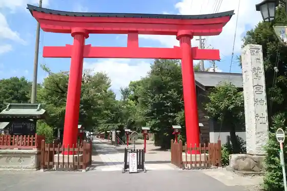
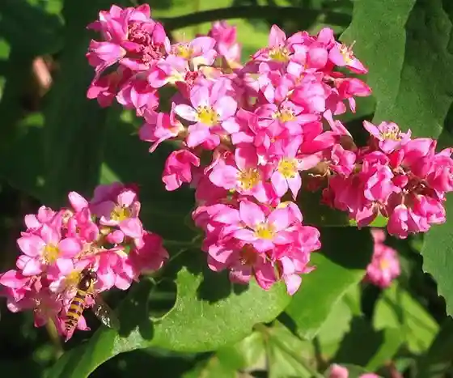
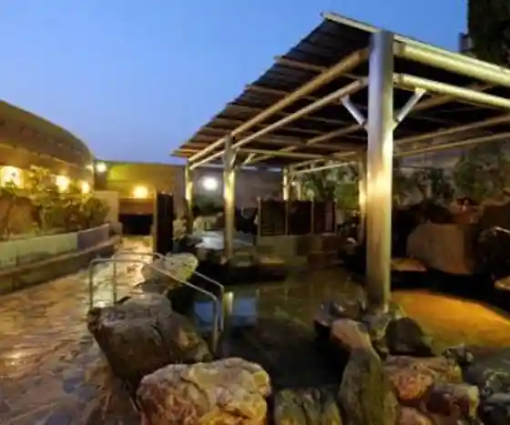
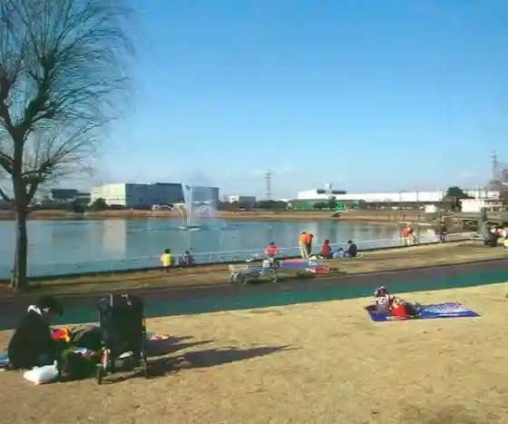

Kosumosu Fureai Rodo
Kuki, Saitama · 0480-85-1111 · Official / source link
Washimiya Shrine
Kuki, Saitama · 0480-58-0434 · Official / source link

Kurihashi no Akabana Soba
Kuki, Saitama · 0480-53-1111 · Official / source link

Hyaku Kannon Onsen
Kuki, Saitama · 0480-59-4126 · Official / source link

Tetsuo Kun Park Kuki (Kuki Shobu Park)
Kuki, Saitama · 0480-23-1366 · Official / source link

Shizukagozen no Haka
Kuki, Saitama · 0480-58-1111 · Official / source link
Shirasagi Park
Kuki, Saitama · 0480-85-1111 · Official / source link
Shobu Joshi Ayame Sono
Kuki, Saitama · 0480-85-1111 · Official / source link
Shobu Shrine no Fuji
Kuki, Saitama · 0480-85-1111 · Official / source link
Kuki Sogo Sports Park
Kuki, Saitama · 0480-21-3611 · Official / source link